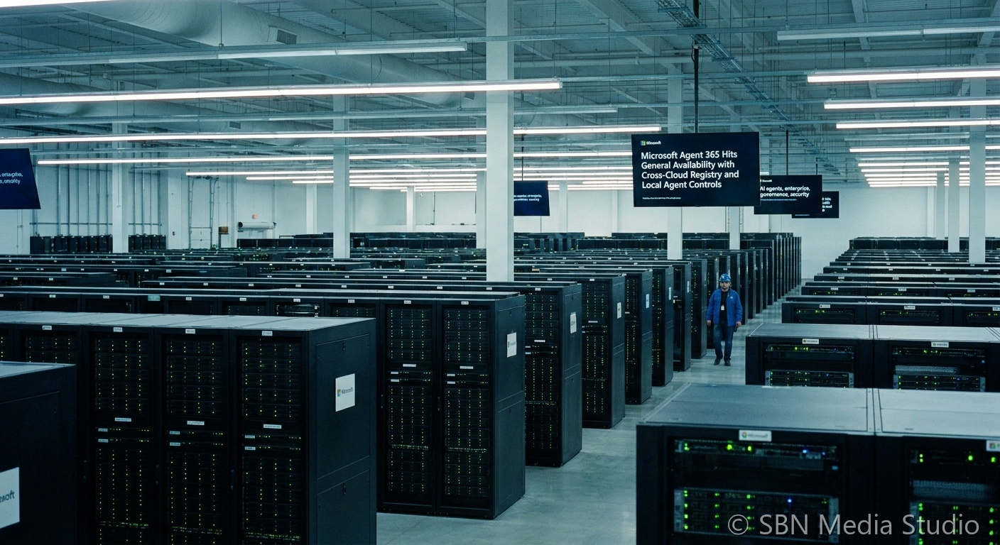

Microsoft Agent 365 Hits General Availability with Cross-Cloud Registry and Local Agent Controls

Microsoft on May 1, 2026 made Agent 365 generally available for commercial customers, turning the product that debuted alongside the Microsoft 365 E7 Frontier Suite at Ignite into a standalone offering. Per Microsoft's security blog and the Microsoft 365 team's GA post, Agent 365 is priced at $15 per user per month as a standalone license and is also included in M365 E7. The product is positioned as a single control plane for AI agents across the enterprise, organized around three pillars: observe, govern, and secure.
Two GA capabilities define how Agent 365 wants to be the system of record. The first is cross-cloud registry sync — agents created in AWS Bedrock and Google Cloud can now register into the same inventory Microsoft uses for its own Copilot and partner agents, in public preview. The second is local agent discovery and management via Microsoft Defender and Intune on Windows endpoints, which extends the policy and threat model from the cloud agent fleet down to agents running on individual machines. Microsoft also launched Windows 365 for Agents in public preview in the United States — cloud PCs purpose-built as agent runtime environments — with broader rollouts to follow.
The GA timing is competitive, not incidental. Salesforce shipped Agentforce Operations into back-office workflows in late April, ServiceNow and Accenture launched a forward-deployed engineering program to push agentic AI to production on May 6, and Anthropic released banking-focused Claude agents with full Microsoft 365 integration on May 5. By making the governance layer general — including for agents that don't run on Microsoft — Agent 365 is staking out the role of Active Directory for agents, betting that enterprises will tolerate competing model and platform choices as long as one console can see and stop every agent acting in their environment. Microsoft has scheduled context mapping, policy-based controls, and runtime blocking via Intune/Defender public preview for June 2026.
Sources
Microsoft Security Blog, Microsoft Tech Community, Futurum Group, Winbuzzer